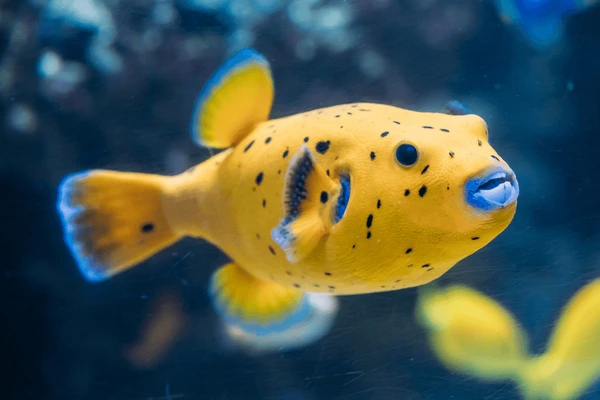
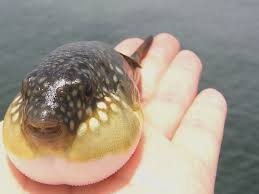
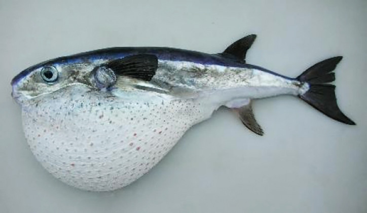
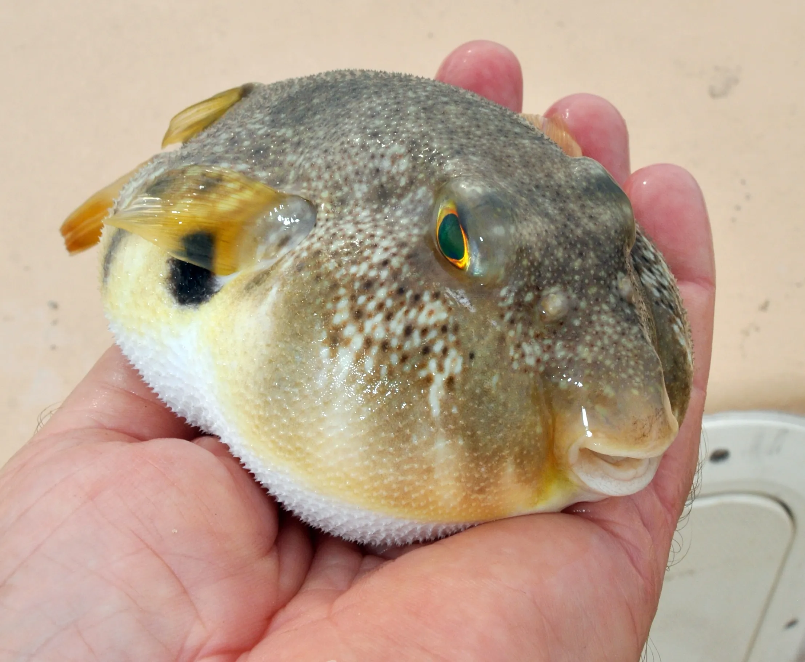
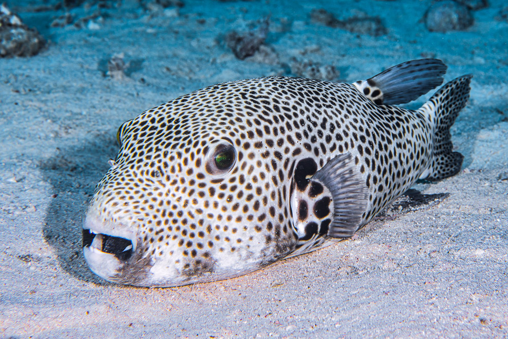
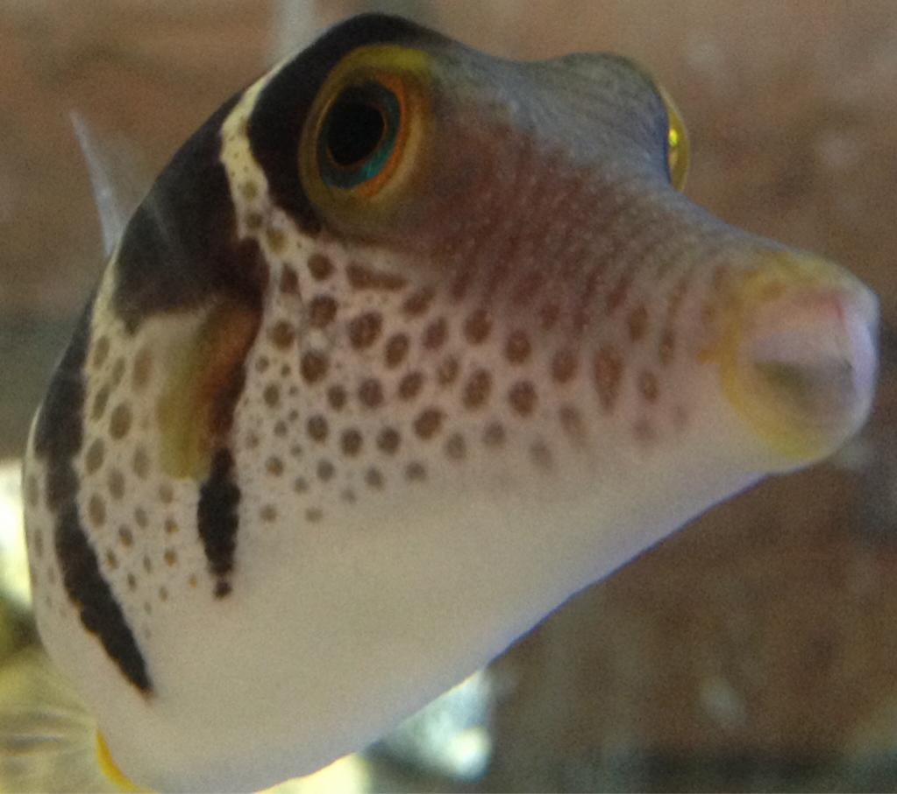

Esistono molte specie di pesci palla, appartenenti alla famiglia Tetraodontidae. Ecco alcune dei nostri soldati più noti:
| Nome scientifico | Nome comune | Descrizione |
|---|---|---|
| Tetraodon nigroviridis | Green Spotted Puffer | Un pesce palla d'acqua dolce e salmastra, noto per le sue macchie verdi e nere sul corpo. |
| Arothron nigropunctatus | Dog-faced Puffer | Ha un aspetto caratteristico con una faccia che ricorda quella di un cane e una colorazione variabile. |
| Takifugu rubripes | Fugu | Uno dei pesci palla più famosi, consumato in Giappone. Questa specie è particolarmente velenosa e richiede una preparazione esperta. |
| Tetraodon mbu | Giant Freshwater Puffer | Una delle più grandi specie d'acqua dolce, conosciuta per la sua dimensione e il suo comportamento interessante. |
| Arothron meleagris | Guinea Fowl Puffer | Caratterizzato da un corpo nero con puntini bianchi, simile alla pelle di una faraona. |
| Arothron hispidus | White-spotted Puffer | Ha un corpo grigio con numerosi punti bianchi, spesso trovato in acque tropicali. |
| Lagocephalus lagocephalus | Oceanic Puffer | Una specie pelagica che si trova in acque oceaniche aperte. |
| Sphoeroides nephelus | Southern Puffer | Comune nelle acque costiere dell'Atlantico occidentale, è meno tossico rispetto ad altre specie. |
| Arothron stellatus | Starry Puffer | Riconoscibile per i suoi motivi stellati sul corpo e le dimensioni considerevoli. |
| Canthigaster valentini | Valentini's Sharpnose Puffer | Una specie più piccola e meno velenosa, spesso presente nei negozi di acquari. |
Dog-faced Puffer

Fugu

Oceanic Puffer

Southern Puffer

Starry Puffer

Valentini's Sharpnose Puffer
